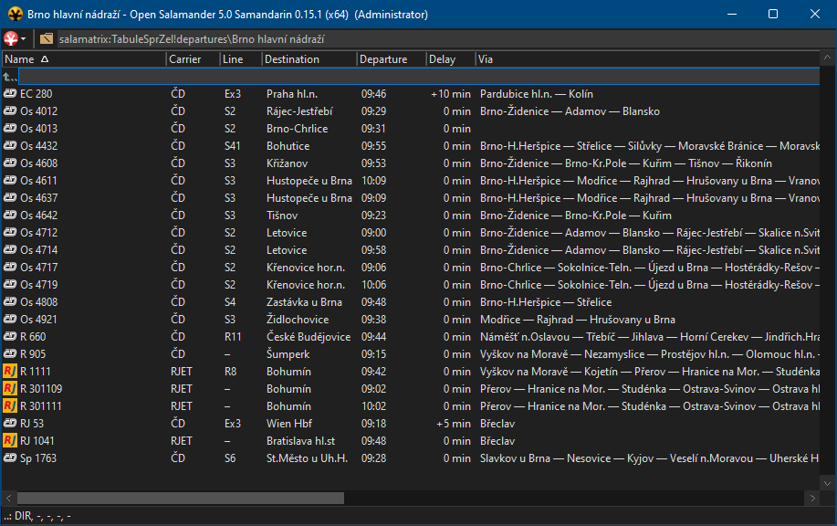
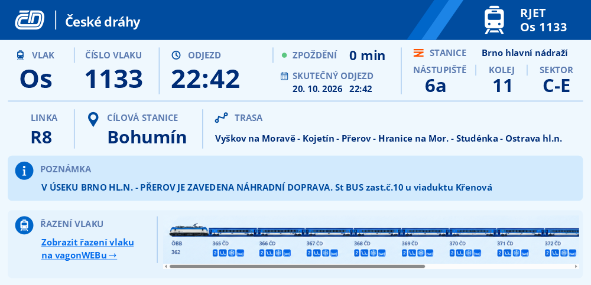

ŽIVÁ DATA
Aktuální odjezdy
ze zvolené stanice
Aktuální údaje z Tabule Správy železnic, výběr ze všech dostupných stanic, možnost konfigurace intervalu obnovy.
Tabule SprŽel jako rozšíření pro Open Samandarin.
Přináší živá data, přehled odjezdů ze zvolené stanice, detaily spojů i řazení vlaku bez přepínání mezi službami.

Extension vytvoří panel departures, který se obnovuje podle nastaveného intervalu a z každého odjezdu otevře jeho detail.
Aktuální údaje z Tabule Správy železnic, výběr ze všech dostupných stanic, možnost konfigurace intervalu obnovy.
Zobrazuje číslo vlaku, čas odjezdu včetně zpoždění, nástupiště a kolej, cílovou destinaci a nácestné stanice, dopravce i poznámku.
Detailní zobrazení odjezdu obsahuje všechny provozní údaje. Mezi odjezdy přepnete myší, Backspace nebo mezerníkem.
Automaticky načítá grafické zobrazení předpokládaného řazení vlaku včetně typu vagónu, vysvětlivek i odkazu na plánky míst.

Každý řádek v panelu může otevřít detail spoje. Ten soustředí všechny údaje důležité před odjezdem do jednoho přehledného pohledu.